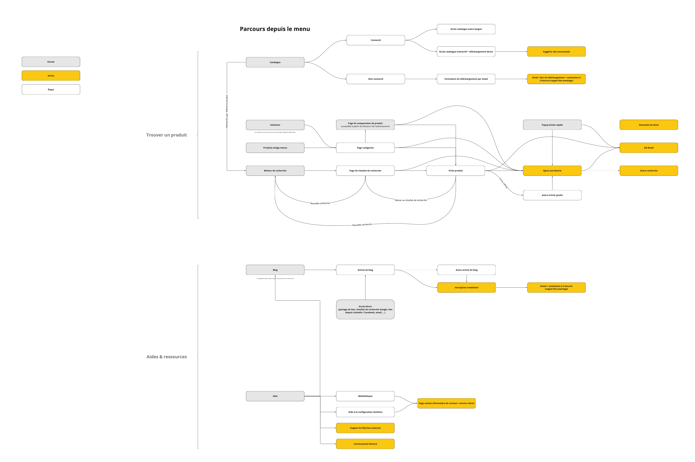
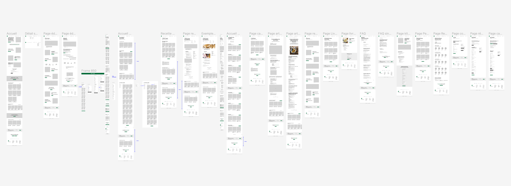

Expertises
Tout mettre en œuvre pour designer des interfaces digitales infaillibles 💥
Le processus de conception s'articule autour de 3 étapes visant à assurer une expérience utilisateur efficace et en adéquation avec les objectifs stratégiques de l'entreprise finale.
La phase de recherche et d'analyse (étape1) permet d'obtenir un plan du site fonctionnel, garantissant une architecture logique qui nous renseigne sur le nombre et les types de pages à designer, la taille et la profondeur du site ainsi que les fonctionnalités et les parcours utilisateurs détaillés.
Tout ceci participant, avec l'essemble des parties prenantes, à construire une expérience utilisateur cohérente (étape 2).
Le résultat final est constitué des wireframes (étape 3) portés par les enseignements acquis précédemment.
Pour les refontes d'interfaces les plus complexes, un audit UX peut être réaliser et un dernier document, le design system, peut être rédigé pour aider les équipes de développement à construire un système cohérent et évolutif.
Stratégie et exécution :
-
 Exemple de parcours utilisateurs Une approche complète et centrée sur l'utilisateur
Pour assurer le succès de l'interface à venir, il est essentiel d'aligner les objectifs stratégiques de l'entreprise aux besoins et aux attentes des utilisateurs.
- Définition des objectifs stratégiques de l’entreprise
- Définition des besoins et des attentes des utilisateurs
- Analyse et compréhension de la concurrence
- Définition des personas ou proto-personas pour personnaliser l’expérience
- Définition des fonctionnalités essentielles
- Définition des parcours utilisateurs pour assurer une navigation fluide et intuitive
Moyens mis en œuvre
-
Analyse des données existantes pour identifier les opportunités de se démarquer :
- Plateforme de marque
- Charte graphique et éditoriale
- Stratégie SEO
- Contenu du site : état des lieux des contenus
- Interviews et ateliers UX avec les parties prenantes
-
Recherche utilisateurs :
- Analyse des données provenant d’outils d’analyse : Google Analytics, Hotjar, …
- Interviews qualitatives : état d’esprit et insight utilisateur
- Questionnaires quantitatif : données chiffrées
- Audit UX réalisé avec des méthodes d'évaluation heuristique
Livrable
- Plan du site fonctionnel (ou SXO si stratégie SEO) sous forme de tableur
- Parcours utilisateur sous forme de schéma Miro
- Compte rendu de l'audit UX
-
 Exemple de wireframes Les wireframes
Les wireframes sont les fondations de votre projet.
C'est la première forme concrète et palpable où toutes les parties prenantes peuvent commencer à se projeter :
- Les chefs de projets et PO peuvent rassurer le client sur l'avancement du projet après les deux premières étapes (qui restent assez théoriques)
- Les développeurs peuvent considérer les défis techniques à relever
- Les concepteurs rédacteurs peuvent matérialiser l'histoire qu'ils et elles veulent raconter (établie lors de l'étape 2)
- Le SEO peut donner ses consignes en pointant les éléments importants et vérifier que leurs consignes sont bien prises en compte
- les graphistes ont une base solide pour préparer leur travail
- Et c'est à ce moment où l'on peut commencer les premiers tests utilisateurs
En fonction du projet, les wireframes peuvent être réalisés
- En « Mobile First »
- Au format mobile, tablette et desktop (ou en fonction de l’écran final)
- En haute définition HD (qui prennent en compte une partie de la charte UI)
- Sous forme de prototypes cliquables qui permettent de mieux comprendre la mise en page et les flux des parcours
- Avec le contenu réel des concepteurs rédacteurs
Moyens
- Sur Figma
- Avec tous les enseignements et apprentissages de la phase de recherche et d’analyse
- En utilisant l'analyse de la concurrence (loi de Jakob)
Livrable
Wireframes et prototypes sur Figma